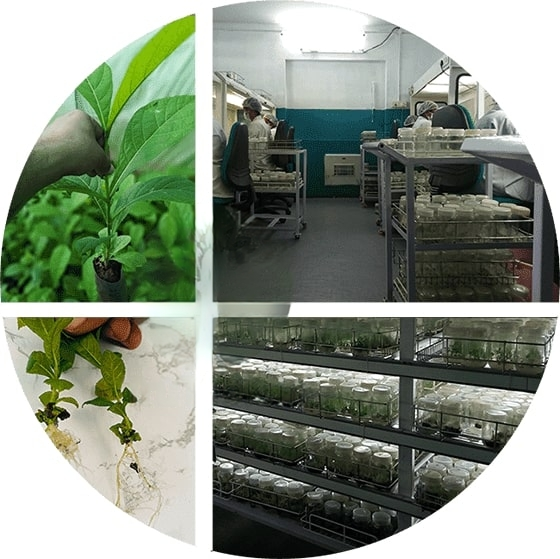
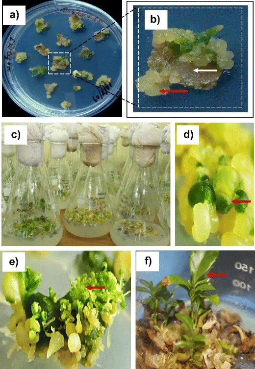
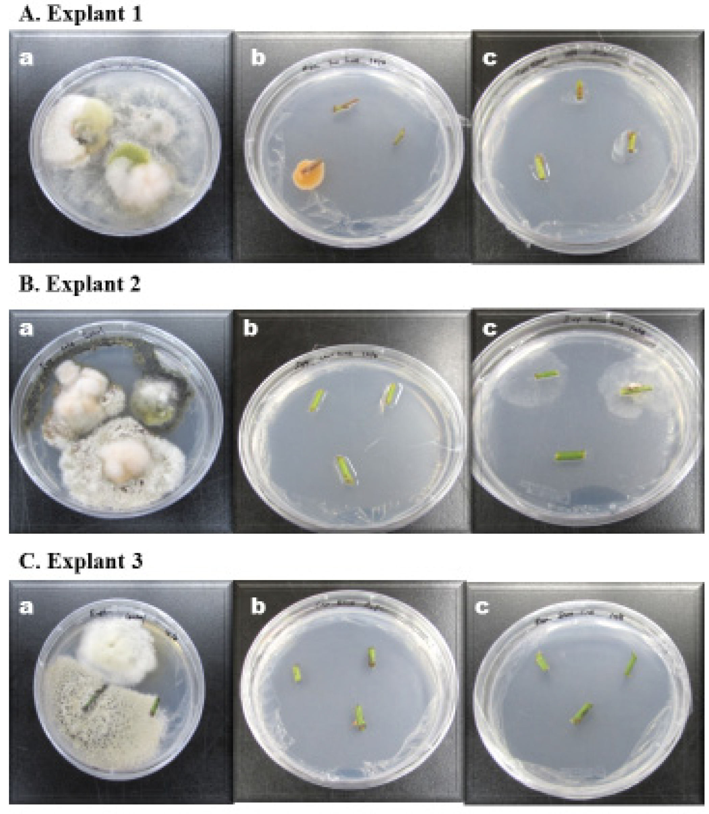
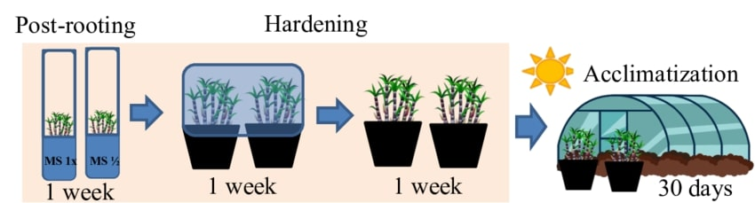

What is Tissue Culture?
Tissue culture is a cutting-edge scientific method used for the regeneration of plants, particularly tea plants, in a controlled laboratory environment. Through this method, small pieces of tissue from a plant—known as explants—are cultured in a sterile, nutrient-rich medium to encourage rapid cell division and growth. This process can be used to propagate high-yielding, disease-resistant, and genetically uniform tea plants.
The primary advantage of tissue culture in tea plant production lies in its ability to rapidly multiply genetically identical plants that are free from diseases, pests, and other environmental factors. This ensures higher quality, more resilient tea crops. In tea plantations, this technology has become indispensable, enabling growers to meet the ever-increasing global demand for tea while maintaining consistency and quality.

Detailed Steps in Tea Tissue Culture
1. Selection of Explants
The initial step involves selecting healthy, disease-free plant tissues to serve as explants. These tissues could be from the shoot tip, leaf, or nodal segments of the tea plant. The selection process is crucial because it determines the quality and success rate of the tissue culture. The explants are then cut into small pieces to prepare them for sterilization and culture initiation.
Key Point: Always choose explants from healthy, disease-free mother plants to ensure optimal growth.

2. Surface Sterilization
Surface sterilization is essential to eliminate any microbial contamination from the explants. This step typically involves using a disinfectant, such as 70% ethanol or 0.1% sodium hypochlorite, to cleanse the explants. The surface sterilization process ensures that no bacteria, fungi, or other pathogens are present that could affect the culture's growth and development. This step must be carried out with precision to prevent tissue damage.
Critical: Over-sterilization can damage explants, while under-sterilization can lead to contamination.

3. Initiation of Culture
Once sterilized, the explants are placed in culture vessels containing nutrient media that support their growth. This nutrient medium typically contains a variety of essential minerals, vitamins, and plant growth regulators that promote cell division and differentiation. The explants undergo rapid cellular growth, forming calluses, which eventually differentiate into shoots and roots. The proper hormonal balance is critical in this step to encourage desired plant growth.
Key Point: Use Murashige and Skoog (MS) medium for optimal growth.
4. Hardening & Acclimatization
After the plantlets have developed sufficiently, they are removed from the culture medium and transferred to a greenhouse environment. Here, they undergo hardening, a process that helps them adjust to real-world conditions. This stage involves gradually reducing humidity levels while increasing exposure to natural light. The plantlets slowly acclimatize to the outdoor environment, which prepares them for successful transplantation into the field.
Critical: Gradual acclimatization is essential to prevent shock and ensure survival.
